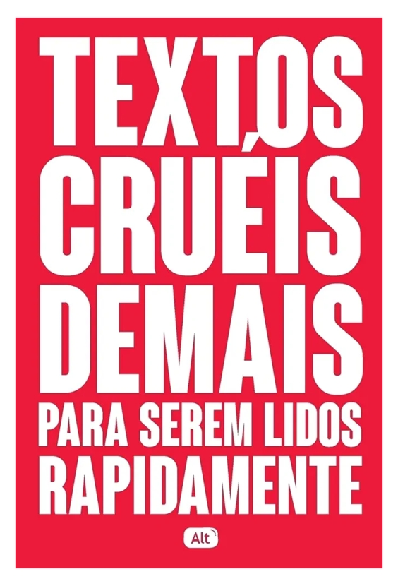

Textos cruéis demais para serem lidos rapidamente - Igor Pires
Sinopse
Indo contra a tendência dos textos curtos e superficiais que são postados nas redes sociais, o coletivo literário Textos cruéis demais para serem lidos rapidamente (TCD) passou a produzir e compartilhar um conteúdo extenso, profundo e extremamente poético em suas páginas no Facebook e no Instagram. Com seus escritos e ilustrações, eles acabaram atingindo um público muito maior do que o esperado, nos mostrando como, apesar da crescente agilidade que nossa comunicação exige, ainda precisamos de tempo para digerir e entender nossas complexas relações humanas. Para este livro, foram produzidos textos inéditos que ganharam a companhia das sensíveis ilustrações de Anália Moraes.